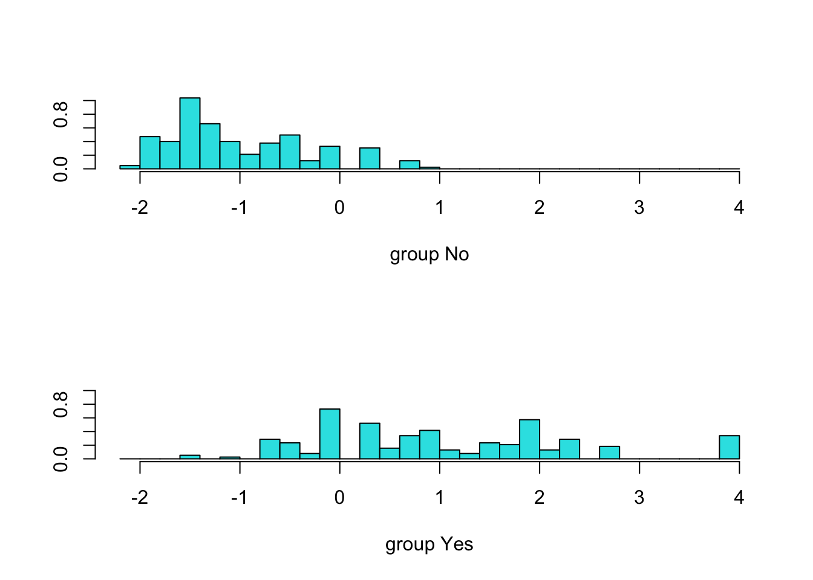

Chapter 5 Linear Discriminant Analysis (LDA)
5.1 TL;DR
- What it does
- Separates observations into categories, like logistic regression, but using category means and variances for separation rather than probabilities
- When to do it
- When exploring various classifiers to see which works best for a given data set
- How to do it
-
With the
lda()function, using training and testing sets - How to assess it
- Assess the accuracy of the predictions on the test set after training
5.2 What it does
Similar to principal component analysys (PCA), LDA reduces dimensionality and finds the best single axis to separate two (or more) groups of observations into categories using a least-squares method of distance from a mean. Like PCA, it returns a set of new axes for the data, organized by importance, so that the first axis is the one that explains the largest amount of variance, and so on, down to \(p - 1\) axes where \(p\) is the number of categories/dimensions.
So, LDA will return 3 axes for a set of observations with 4 categories, or 1 for a set of observations with 2 categories. Each axis will have a loading score that indicates which variables had the biggest impacts on it.
5.3 When to do it
When you want to see if it will work better than other classification methods! It should always be tried along with other classifiers like logistic regression, quadratic discriminant analysis, and Naive Bayes.
5.4 How to do it
Again, using the Boston data from the logistic regression chapter:
data(Boston)
boston <- Boston %>%
mutate(
# Create the categorical crim_above_med response variable
crim_above_med = as.factor(ifelse(crim > median(crim), "Yes", "No")),
# Also make a numeric version of crim_above_med for the plot
crim_above_med_num = ifelse(crim > median(crim), 1, 0)
)We again split the data into training and test sets:
set.seed(1235)
boston.training <- rep(FALSE, nrow(boston))
boston.training[sample(nrow(boston), nrow(boston) * 0.8)] <- TRUE
boston.test <- !boston.trainingAnd fit the above model to the training data using the lda() function from the MASS library1 (note: there is no family argument as with glm(), but the calls are otherwise identical):
boston_lda.fits <-
lda(
crim_above_med ~ nox,
data = boston,
subset = boston.training,
)5.5 How to assess it
The fit can be directly examined:
boston_lda.fits## Call:
## lda(crim_above_med ~ nox, data = boston, , subset = boston.training)
##
## Prior probabilities of groups:
## No Yes
## 0.5247525 0.4752475
##
## Group means:
## nox
## No 0.4710519
## Yes 0.6357865
##
## Coefficients of linear discriminants:
## LD1
## nox 12.29052And plotted:
plot(boston_lda.fits)
The fit should be used to predict the test data, and the model can be assessed on its results:
boston_lda.pred <- predict(boston_lda.fits, boston[boston.test,])
boston_lda.class <- boston_lda.pred$class
table(boston_lda.class, boston[boston.test,]$crim_above_med)##
## boston_lda.class No Yes
## No 38 12
## Yes 3 49In this example, LDA made the correct categorization 87 times out of 102, with 3 false positives and 12 false negatives. Again, we can compute the prediction accuracy by the mean of the correct-to-wrong guesses:
mean(boston_lda.class == boston[boston.test,]$crim_above_med)## [1] 0.85294125.6 Where to learn more
- Chapter 4.4.1 - 4.4.2 in James et al. (2021)
- StatQuest: Linear Discriminant Analysis
References
Note to my fellow New Englanders: the MASS library is named for a book titled “Modern Applied Statistics with S”, and has nothing to do with Massachusetts or the Boston dataset we’re using here↩︎